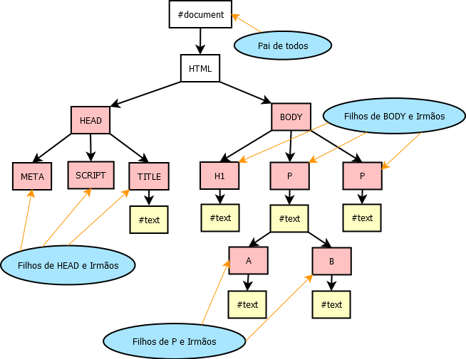

A árvore DOM é um conjunto de objetos dentro do navegador que dá acesso aos componentes internos do website
A Árvore DOM começa no objeto window, ele é raiz da árvore. A partir do window, existem muitos outros objetos, como location, document, e history, todos irmãos, e todos os objetos exemplificados no diagrama acima. como exemplificado no diagrama acima
Existem vários métodos para acessarmos objetos dentro da árvore DOM. Podemos acessá-la por:
Esse método seleciona todas as tags com o mesmo nome.
Para selecionarmos parágrafos, por exemplo, escreveríamos assim:
window.document.getElementsByTagName('p')
Na verdade, não seria necessário escrever window. Caso quiséssemos selecionar algum parágrafo específico, bastaria colocar entre colchetes o número daquele parágrafo (sempre começando por 0, obviamente), dessa forma:
document.getElementsByTagName('p')[0] // seleciona o primeiro parágrafo
Agora, podemos colocar esse parágrafo dentro de uma variável e fazer o que der na telha com ele:
var p1 document.getElementsByTagName('p')[0]
document.write(`No primeiro parágrafo está escrito assim: ${p1.innerText}` //innerText pega o texto, innerHTML pega além do texto, as formatações, ou seja, os filhos dele na árvore
Esse método seleciona um elemento com dado ID
O texto a seguir foi posto numa div e a ele foi atribuído o id text:
Utilizando o seguinte código podemos selecioná-lo:
window.document.getElementById('text')
Muito semelhante à seleção por nome.
Do mesmo jeito que fizemos com ID, podemos fazer com nome. Repare, entretanto, que quando selecionamos por ID estamos selecionado um elemento único, (ELEMENT), já quando estamos selecionando por nome, estmos selecionando mais de um (ELEMENTS), ou seja,é necessário que se esclareça com os colchetes qual o elemento que se deseja selecionar
Utilizando querySelector() e querySelectorAll podemos selecionar elementos por seletores.
Seletores utilizam a sintaxe das CSS